7th Grade Math Worksheets
55 Math resources for 7th Grade, ready to print: Milione, Matematica, Manganese, Litio and more. Each resource page shows the grade range, page count and a preview and links straight to the product on TpT.
55 resources

Geometry Reading Comprehension Passages | Math Scavenger Hunt 7-8

Milione – Italian Reading Comprehension Worksheet (Scheda): Cloze & Listening

Matematica – Italian Reading Comprehension Worksheet (Scheda): Cloze & Listening

Manganese – Italian Reading Comprehension Worksheet (Scheda): Cloze & Listening

Litio – Italian Reading Comprehension Worksheet (Scheda): Cloze & Listening

Berkelio – Italian Reading Comprehension Worksheet (Scheda): Cloze & Listening

Bario – Italian Reading Comprehension Worksheet (Scheda): Cloze & Listening

Attinio – Italian Reading Comprehension Worksheet (Scheda): Cloze & Listening

Geometria – Italian Reading Comprehension Worksheet (Scheda): Cloze & Listening

Gallio – Italian Reading Comprehension Worksheet (Scheda): Cloze & Listening

Olmio – Italian Reading Comprehension Worksheet (Scheda): Cloze & Listening

Numero – Italian Reading Comprehension Worksheet (Scheda): Cloze & Listening

Nichel – Italian Reading Comprehension Worksheet (Scheda): Cloze & Listening

Neodimio – Italian Reading Comprehension Worksheet (Scheda): Cloze & Listening

Molibdeno – Italian Reading Comprehension Worksheet (Scheda): Cloze & Listening

Meitnerio – Italian Reading Comprehension Worksheet (Scheda): Cloze & Listening

Lantanio – Italian Reading: Cloze Text, Listening Task & Word Search (Scheda)

Itterbio – Italian Reading: Cloze Text, Listening Task & Word Search (Scheda)

Iridio – Italian Reading: Cloze Text, Listening Task & Word Search (Scheda)

Iodio – Italian Reading: Cloze Text, Listening Task & Word Search (Scheda)

Ingegnere – Italian Reading: Cloze Text, Listening Task & Word Search (Scheda)

Gadolinio – Italian Reading: Cloze Text, Listening Task & Word Search (Scheda)

Frazione – Italian Reading: Cloze Text, Listening Task & Word Search (Scheda)

Francio – Italian Reading: Cloze Text, Listening Task & Word Search (Scheda)

Cromo – Italian Reading: Cloze Text, Listening Task & Word Search (Scheda)

Bromo – Italian Reading: Cloze Text, Listening Task & Word Search (Scheda)

Curio – Italian Reading: Cloze Text, Listening Task & Word Search (Scheda)

Cloro – Italian Reading: Cloze Text, Listening Task & Word Search (Scheda)
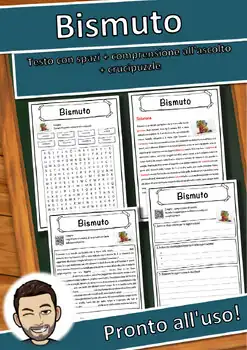
Bismuto – Italian Reading: Cloze Text, Listening Task & Word Search (Scheda)
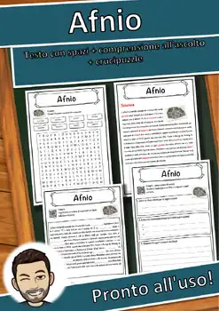
Afnio – Italian Reading: Cloze Text, Listening Task & Word Search (Scheda)
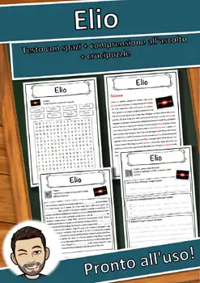
Elio – Italian Reading: Cloze Text, Listening Task & Word Search (Scheda)
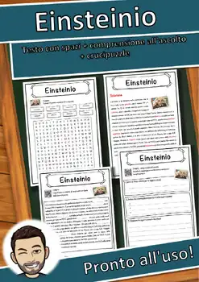
Einsteinio – Italian Reading: Cloze Text, Listening Task & Word Search (Scheda)
Dubnio – Italian Reading: Cloze Text, Listening Task & Word Search (Scheda)
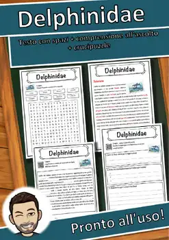
Delphinidae – Italian Reading: Cloze Text, Listening Task & Word Search (Scheda)
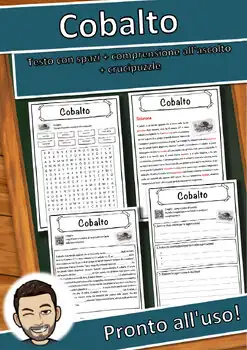
Cobalto – Italian Reading: Cloze Text, Listening Task & Word Search (Scheda)
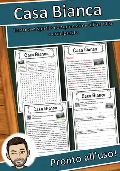
Casa Bianca – Italian Reading: Cloze Text, Listening Task & Word Search (Scheda)
Carl Friedrich Gauss – Italian Reading: Cloze, Listening & Word Search
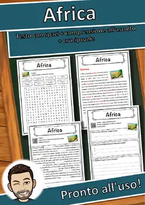
Africa – Italian Reading: Cloze Text, Listening Task & Word Search (Scheda)
Unit of measurement – Reading Comprehension: Cloze, Listening & Word Search
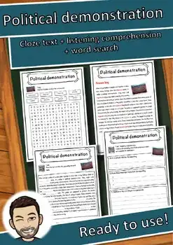
Political demonstration – Reading Comprehension: Cloze, Listening & Word Search
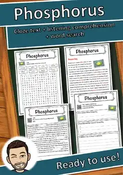
Phosphorus – Reading Comprehension: Cloze Text, Listening Task & Word Search
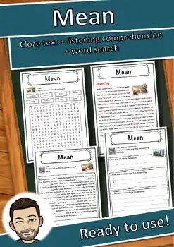
Mean – Reading Comprehension: Cloze Text, Listening Task & Word Search
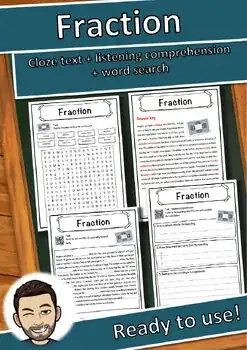
Fraction – Reading Comprehension: Cloze Text, Listening Task & Word Search
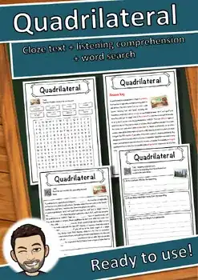
Quadrilateral – Reading Comprehension: Cloze Text, Listening Task & Word Search
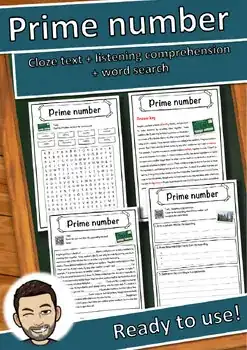
Prime number – Reading Comprehension: Cloze Text, Listening Task & Word Search
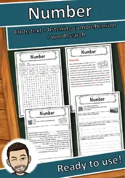
Number – Reading Comprehension: Cloze Text, Listening Task & Word Search
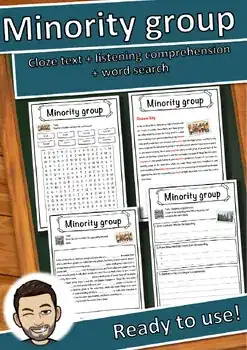
Minority group – Reading Comprehension: Cloze Text, Listening Task & Word Search
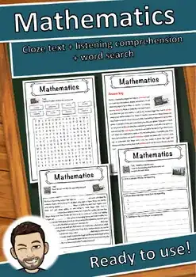
Mathematics – Reading Comprehension: Cloze Text, Listening Task & Word Search
No resources found – try a different search term or filter.